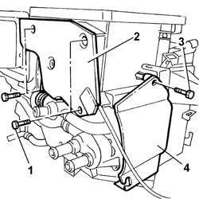
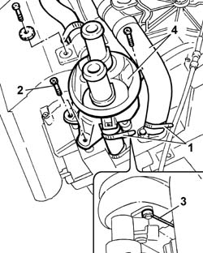
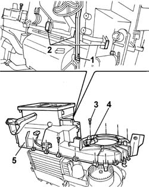
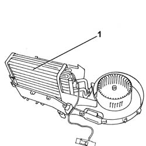

5020A54 HEATER RADIATOR - R+R WITH HEATER BOX REMOVED
- Path
- Procedures > 50 AUXILIARY UNITS > 5020 HEATER > 5020A BOX AND COMPONENTS > 5020A54 HEATER RADIATOR - R+R WITH HEATER BOX REMOVED
- Kind
- repair procedure (removal / refitting; the operation number is the code)
- Applies to
- all engines; all production periods
- Interactive page
- https://sloeber94.github.io/elrnDB-fDct/en/#/244001241
Applies to: all engines; all production periods
 Removing
Removing
 Refitting
RefittingOp. 5020A72 AIR INTAKE AND RECIRCULATION FLAP FAN/FLAP, L.H. OR R.H.-DISMANTLE AND REBUILD
1. Undo the retaining bolts.
2. Remove the rear guard.
3. Undo the retaining bolt.
4. Remove the side guard.

Applies to: all engines; all production periods
1. Remove the retaining bands.
2. Undo the bolts fixing the tap.
- Open the tap control cable retaining spring.
3. Disconnect the tap control cable and remove it.
4. Remove the tap complete with radiator return pipe.

Applies to: all engines; all production periods
1. Disconnect the floor distribution flap control lever.
2. Remove the metal springs.
3. Undo the retaining bolts.
4. Undo the fixing bolt and move the frost thermostat to the side.
5. Remove the upper half casing.

Applies to: all engines; all production periods
- Disconnect the pipes.
1. Withdraw the heater radiator.

Applies to: all engines; all production periods
Refitting
Removing- Position the heater radiator.
- Connect the pipes.
- Position the upper half casing and tighten the fixing bolts.
- Attach the metal springs.
- Connect the floor distribution flap control lever.
- Position the frost thermostat in the housing in the upper half casing and tighten the fixing bolt.
- Connect the tap control cable and secure it to the fastening spring.
- Position the tap complete with radiator return pipe and connect the pipes to the heater radiator.
- Tighten the bolts fixing the tap.
- Secure the heater radiator pipes using suitable retaining bands.
- Position the flexible pipe complete with connector for bleeding the cooling system.
- Secure the pipe to the tap and to the heater radiator using suitable bands.
- Position the side guard and tighten the fixing bolt.
- Position the rear guard and tighten the fixing bolts.
Op. 5020A72 AIR INTAKE AND RECIRCULATION FLAP FAN/FLAP, L.H. OR R.H.-DISMANTLE AND REBUILD